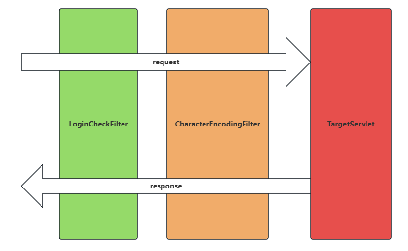
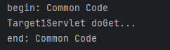
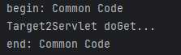

在Servlet中，Filter（过滤器）是一种可重用的组件，用于在请求到达Servlet或响应返回客户端之前拦截并处理HTTP请求和响应。它允许开发者在不修改核心业务逻辑的情况下，对Web应用的请求/响应流程进行统一处理。
UTF-8）。web.xml定义的顺序依次执行。init()方法（仅一次）。 doFilter()方法。 destroy()方法。
观察以下代码存在的问题：
@WebServlet("/filter/target1")
public class Target1Servlet extends HttpServlet {
@Override
protected void doGet(HttpServletRequest request, HttpServletResponse response) throws ServletException, IOException {
System.out.println("begin: Common Code");
System.out.println("Target1Servlet doGet...");
System.out.println("end: Common Code");
}
}
@WebServlet("/filter/target2")
public class Target2Servlet extends HttpServlet {
@Override
protected void doGet(HttpServletRequest request, HttpServletResponse response) throws ServletException, IOException {
System.out.println("begin: Common Code");
System.out.println("Target2Servlet doGet...");
System.out.println("end: Common Code");
}
}
存在的问题：多个 Servlet 存在公共代码，每个 Servlet 中都写一遍，代码没有得到复用。
Filter 过滤器可以解决代码复用的问题。公共代码只需要在过滤器中编写一次即可。
两个 Servlet 改造如下：
@WebServlet("/filter/target1")
public class Target1Servlet extends HttpServlet {
@Override
protected void doGet(HttpServletRequest request, HttpServletResponse response) throws ServletException, IOException {
System.out.println("Target1Servlet doGet...");
}
}
@WebServlet("/filter/target2")
public class Target2Servlet extends HttpServlet {
@Override
protected void doGet(HttpServletRequest request, HttpServletResponse response) throws ServletException, IOException {
System.out.println("Target2Servlet doGet...");
}
}
编写过滤器：CommonCodeFilter
package com.jkweilai.filter;
import jakarta.servlet.*;
import java.io.IOException;
public class CommonCodeFilter implements Filter {
@Override
public void init(FilterConfig filterConfig) throws ServletException {
}
@Override
public void doFilter(ServletRequest request, ServletResponse response, FilterChain chain) throws IOException, ServletException {
System.out.println("begin: Common Code");
// 执行下一个过滤器，没有过滤器时则执行最终的Servlet
chain.doFilter(request, response);
System.out.println("end: Common Code");
}
@Override
public void destroy() {
}
}
web.xml中配置过滤器，或者也可以使用注解 ****@WebFilter**** 标注：
<filter>
<filter-name>commonCodeFilter</filter-name>
<filter-class>com.jkweilai.filter.CommonCodeFilter</filter-class>
</filter>
<filter-mapping>
<filter-name>commonCodeFilter</filter-name>
<url-pattern>/filter/*</url-pattern>
</filter-mapping>
注意：*在****web.xml****文件中同时配置了 Servlet 和 Filter，用户发送的请求路径同时满足 Servlet 和 Filter 时，Filter 优先级高，先执行*。
启动服务器，打开浏览器，先后输入以下 URL，观察控制台输出：
http://localhost:8080/web01/filter/target1

http://localhost:8080/web01/filter/target2

可以看到过滤器起作用了。
如果编写了多个过滤器，在 web.xml 文件中配置越靠上，优先级越高。大家可以编写程序测试一下。
在Servlet中，Filter的过滤路径（url-pattern）用于指定哪些请求会被过滤器拦截。其配置方式灵活多样，支持多种匹配规则。以下是所有常见的写法及其详细说明：
<url-pattern>/user/login</url-pattern>。仅拦截/user/login请求。/开头并以/*结尾，匹配所有以指定路径开头的URL。<url-pattern>/admin/*</url-pattern>。拦截所有以/admin/开头的请求。*.开头，匹配特定后缀的文件或请求。<url-pattern>*.do</url-pattern>。<url-pattern>/</url-pattern>。兜底匹配。/*，拦截所有请求（包括静态资源）。<url-pattern>/*</url-pattern>。<url-pattern>或逗号分隔（注解方式）配置多个路径。 <filter-mapping>
<filter-name>myFilter</filter-name>
<url-pattern>/api/*</url-pattern>
<url-pattern>*.do</url-pattern>
</filter-mapping>
@WebFilter(urlPatterns = {"/api/*", "*.do"})
/或/*）。 /user/login优先于/user/*。